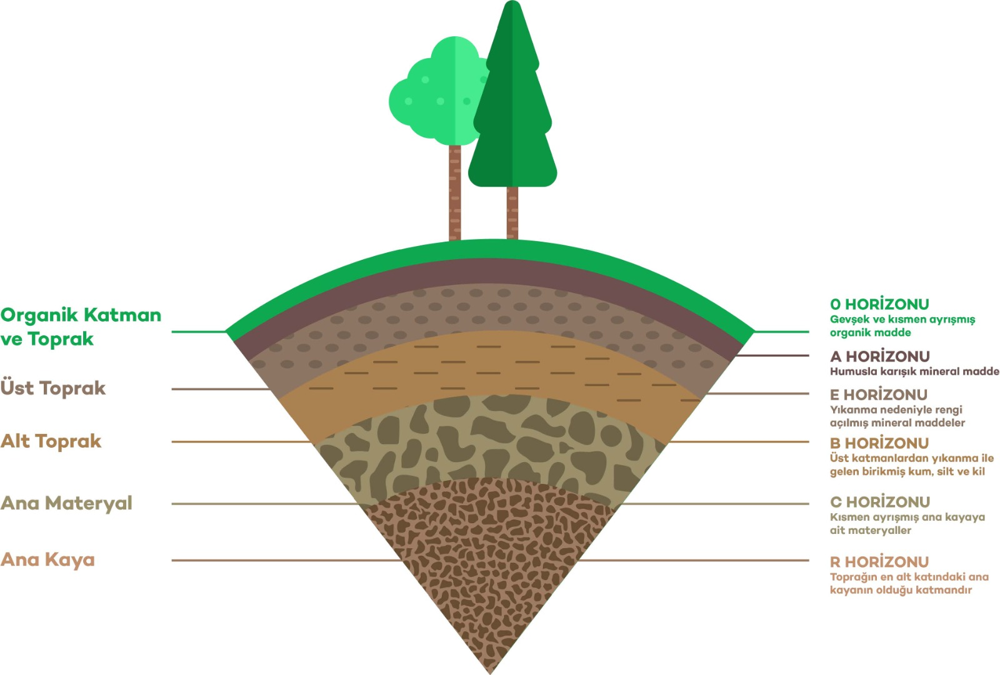

Toprak profilindeki farklı tabakaların özellikleri ve oluşumu.
Toprak profilindeki tabakalar, toprağın oluşum sürecindeki farklı aşamaları ve özellikleri yansıtır. Genellikle toprak profili, yüzeyden başlayarak derine doğru sıralanan farklı tabakalardan oluşur. Bu tabakalar şunlardır:
O, A, E, B, C ve R Tabakaları: Toprak profili genellikle bu ana tabakaları içerir. Her biri farklı özelliklere ve içeriğe sahiptir.
* O Tabakası: Yüzeydeki organik madde katmanıdır. Genellikle çürümekte olan yapraklar, bitki artıkları ve humus içerir.
* A Tabakası (Üst Toprak): Genellikle en üstte bulunan ve bitkilerin köklerinin yayıldığı verimli tabakadır. Organik madde, mineraller ve diğer besin maddeleri içerir.
* E Tabakası (Elluviyasyon Tabakası): Bu tabaka, genellikle kil ve organik maddelerin yıkanması sonucunda oluşan aşındırılmış materyallerden oluşur. Bu tabaka bazen bulunmayabilir.
* B Tabakası (Alt Toprak): A ve E tabakaları arasında yer alır. Burada organik maddeler ve mineraller, alt tabakalara sızan sularla birlikte taşınabilir veya birikimi olabilir.
* C Tabakası: Bu tabaka, ana kayaya en yakın olan katmandır. Yarı parçalanmış kaya ve taşçıklar içerir.
* R Tabakası: Bu tabaka, ana kaya veya kayacın kendisidir. Toprağın oluşumu buradan başlar ve ana kayadan türemiş materyaller içerir.
Toprak profili, farklı bölgelerde farklılık gösterebilir. Toprağın yapısı, içeriği ve derinliği iklim, bitki örtüsü, erozyon ve jeolojik faktörler gibi çeşitli etkenlere bağlı olarak değişebilir.
Bilgi Almak İçin Tıkla